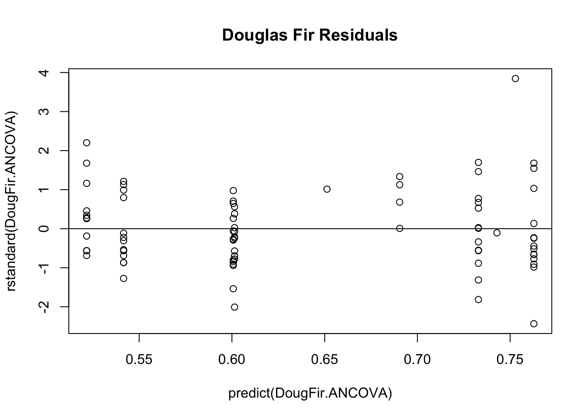
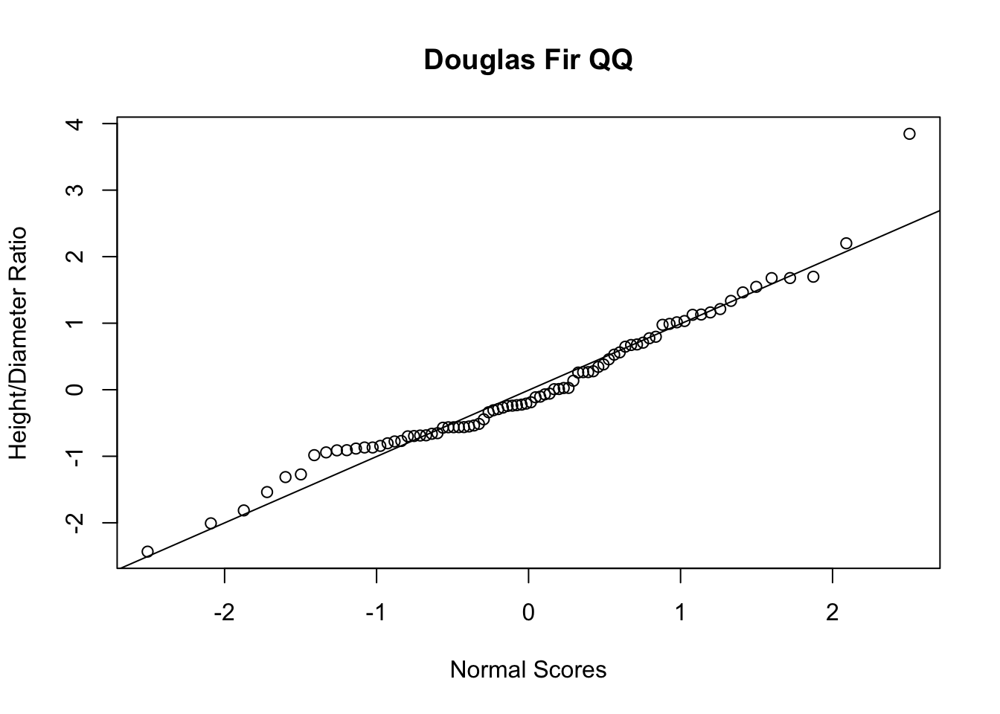
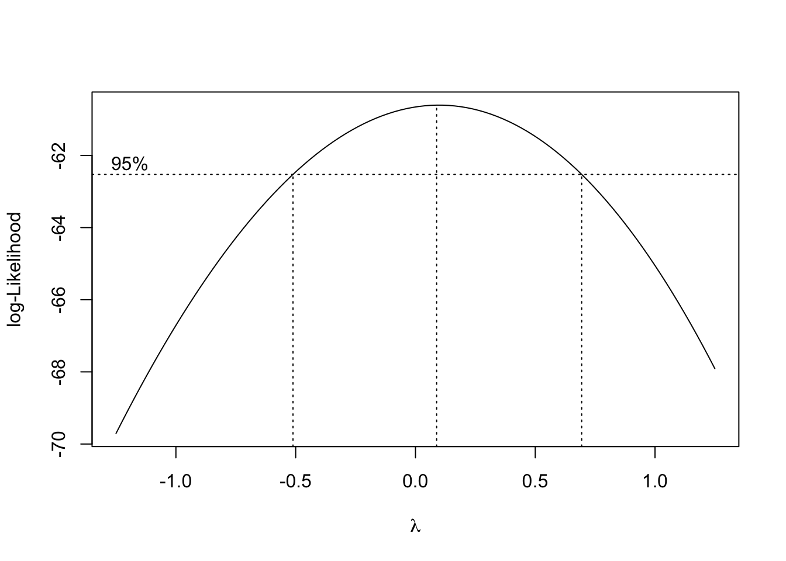
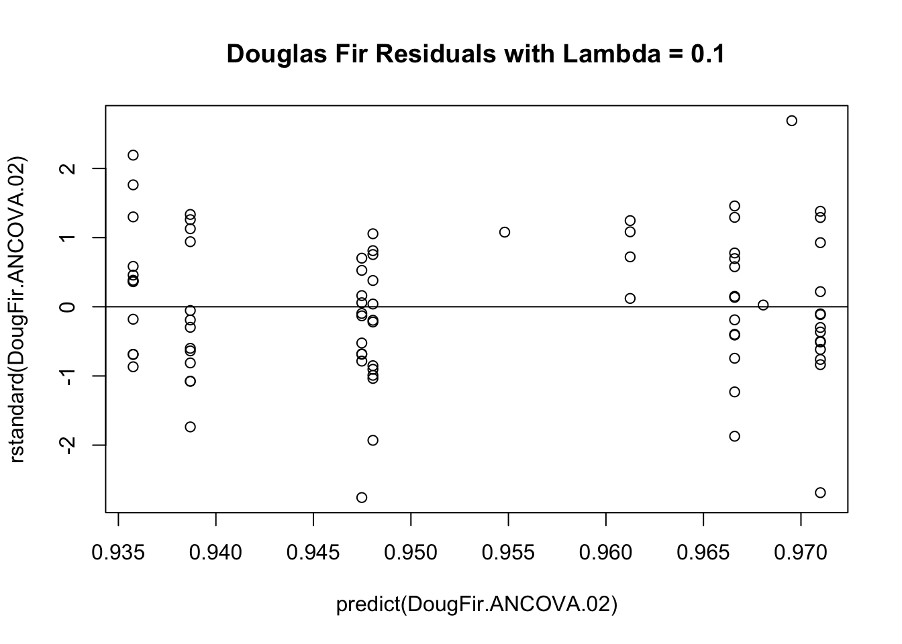
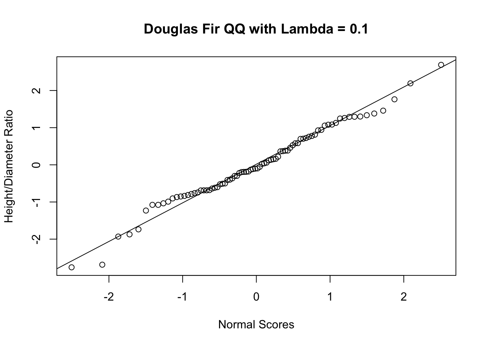

My independent variables are soil parent material (categorical) and mean annual radiation (continuous). The variables diameter breast height (continuous) and height (continuous) are used to derive my dependent variable, height diameter ratio (continuous).
Generating Scatter Plot:
Note: Requires data cleaning.
DougFir.plot <-ggplot(DougFir.data, aes(x= MAR, y=HDR, color=SPM)) +geom_point(size=3) +ggtitle('Effect of Soil Parent Material and Mean Annual Radiation On Douglas Fir Height/Diameter Ratio')DougFir.plot +scale_color_brewer(palette="Dark2")
I don’t like this plot. It’s difficult to interpret the effect of mean annual radiation and the clustered nature of the data looks a tad weird.
Generating Boxplot:
DougFir.box <-ggplot(DougFir.data, aes(x = SPM, y = HDR, fill = SPM)) +geom_boxplot(outlier.shape =NA) +theme(legend.position="top") +ggtitle('Effect of Soil Parent Material and Mean Annual Radiation On Douglas Fir Height/Diameter Ratio')DougFir.box +scale_color_brewer(palette="Dark2")
I want to create a visualization that demonstrates the difference in HDR based on SPM. However, using the raw to generate a boxplot doesn’t control for my covariate, so at best it merely provides the reader a preliminary gist of what’s going on. The effect of soil parent material after controlling for mean annual radiation can’t be assessed until after performing the ANCOVA. I’m considering creating a boxplot based on the predicted values of my regression model, which control for mean annual radiation, and displaying it side-by-side with the boxplot based on the raw data.
Develop a personalized template of aesthetic preferences for ggplot figures.
Continued Development of Statistical Model:
Creating Linear Regression Model:
Note: How does the creation of this linear model control for MAR? Because regression inherently controls for the effect of additional variables in the model when assessing the effect of a single variable, right?
DougFir.ANCOVA <-lm(HDR ~ MAR + SPM, data = DougFir.data)
Performing ANOVA:
Note: Should I label this ANCOVA?
anova(DougFir.ANCOVA)
Analysis of Variance Table
Response: HDR
Df Sum Sq Mean Sq F value Pr(>F)
MAR 1 0.00809 0.00809 0.3423 0.5602
SPM 2 0.67668 0.33834 14.3116 5.075e-06 ***
Residuals 78 1.84398 0.02364
---
Signif. codes: 0 '***' 0.001 '**' 0.01 '*' 0.05 '.' 0.1 ' ' 1
Generating Residual-by-Predicted Plot:
plot(predict(DougFir.ANCOVA), rstandard(DougFir.ANCOVA),main ='Douglas Fir Residuals')abline(0,0)

The pattern in the residuals-by-predicted plot demonstrates a slight megaphone pattern, violating the assumption equal variance necessary for regression.
Generating QQ Plot:
DougFir.QQ <-rstandard(DougFir.ANCOVA)qqnorm(DougFir.QQ,ylab ='Height/Diameter Ratio',xlab ='Normal Scores',main ='Douglas Fir QQ',)qqline(DougFir.QQ)

The QQ plot shows that my data decently conforms to a normal distribution.
Performing Box-Cox Analysis:
boxcox(HDR ~ MAR + SPM, data = DougFir.data, lambda =seq(-1.25, 1.25, length =10))

Performing Transformation on the Regression Model with Lambda set to 0.1:
DougFir.ANCOVA.02<-lm(HDR^0.1~ MAR + SPM, data = DougFir.data)
Generating Residual-by-Predicted Plot After Performing Transformation:
plot(predict(DougFir.ANCOVA.02), rstandard(DougFir.ANCOVA.02),main ='Douglas Fir Residuals with Lambda = 0.1')abline(0,0)

The pattern in the residuals-by-predicted plot, after performing the transformation with lambda = 0.1, demonstrates a more equal distribution of the residual errors, making this model a better fit.
Generating QQ Plot After Performing Transformation:
DougFir.QQ.02<-rstandard(DougFir.ANCOVA.02)qqnorm(DougFir.QQ.02,ylab ='Height/Diameter Ratio',xlab ='Normal Scores',main ='Douglas Fir QQ with Lambda = 0.1',)qqline(DougFir.QQ.02)

The QQ plot shows that my data conform to a normal distribution.
Performing ANOVA on the Transformed Model:
anova(DougFir.ANCOVA.02)
Analysis of Variance Table
Response: HDR^0.1
Df Sum Sq Mean Sq F value Pr(>F)
MAR 1 0.000122 0.0001223 0.2398 0.6257
SPM 2 0.014447 0.0072234 14.1647 5.652e-06 ***
Residuals 78 0.039777 0.0005100
---
Signif. codes: 0 '***' 0.001 '**' 0.01 '*' 0.05 '.' 0.1 ' ' 1
Performing a Tukey’s Honestly Significant Difference Test:
Note: The next step is to perform a post-hoc test to determine which soil parent materials demonstrated significant differences in their effect on HDR.